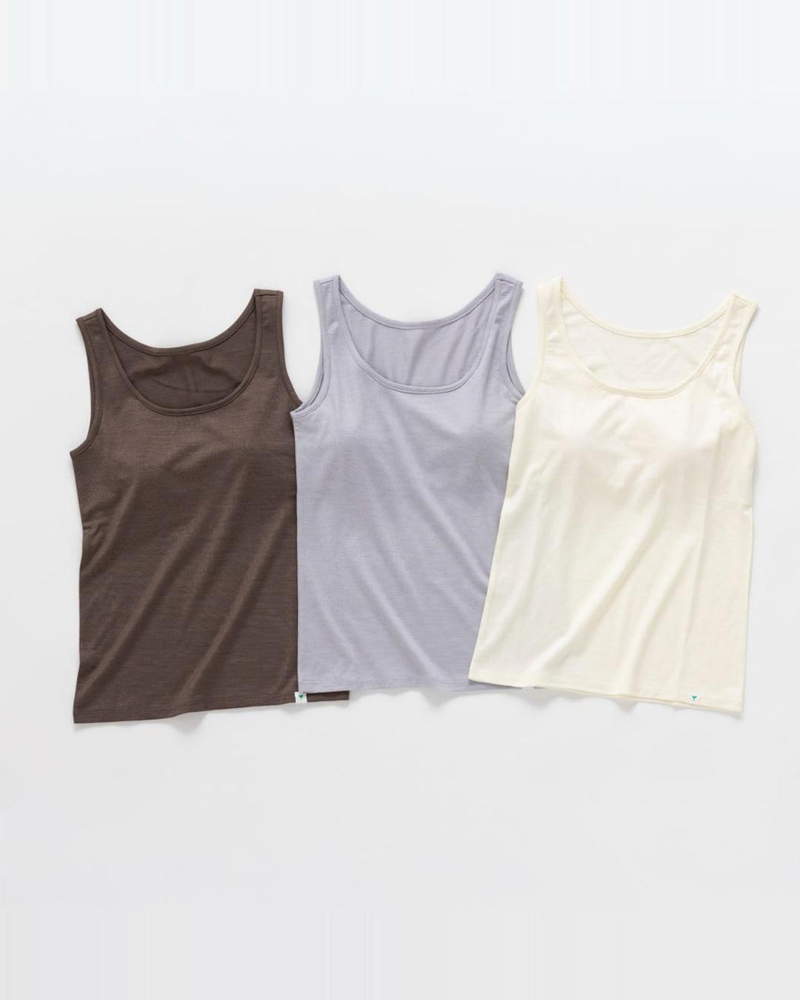
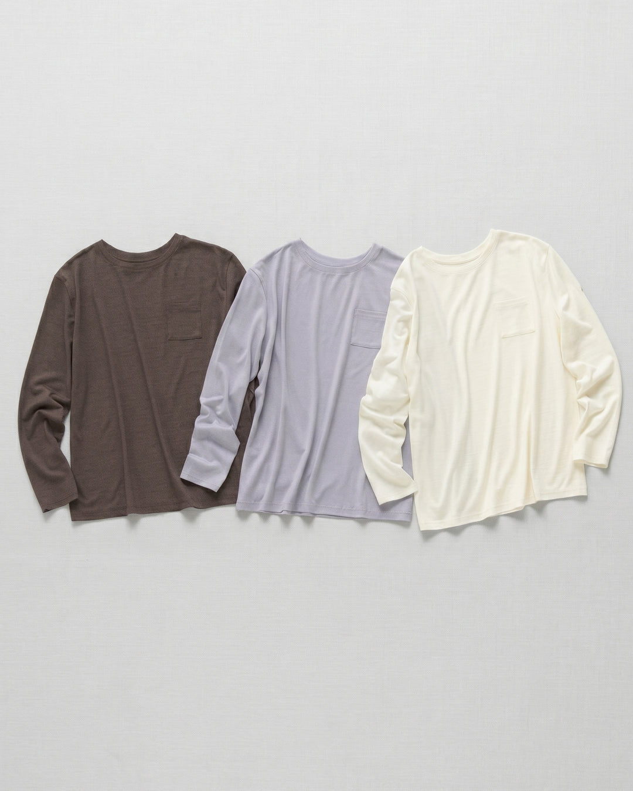
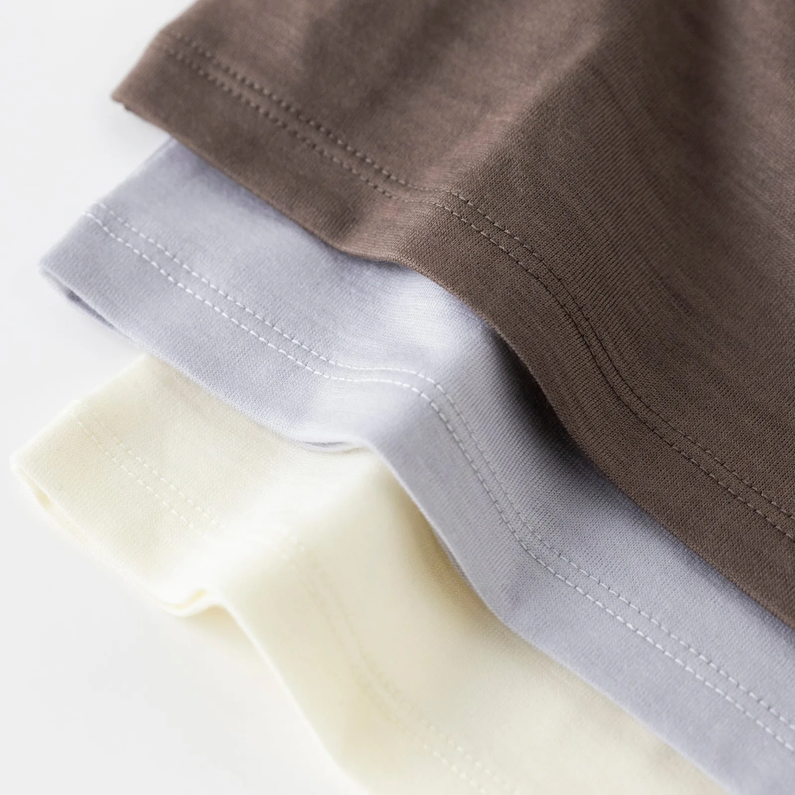
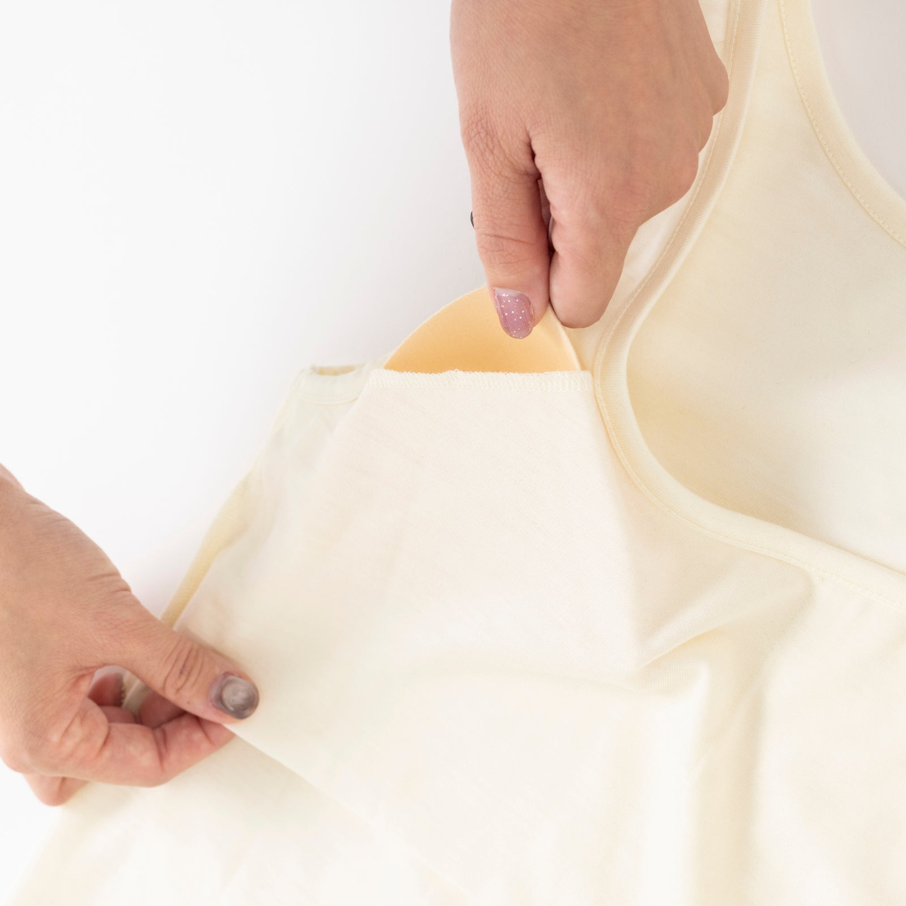
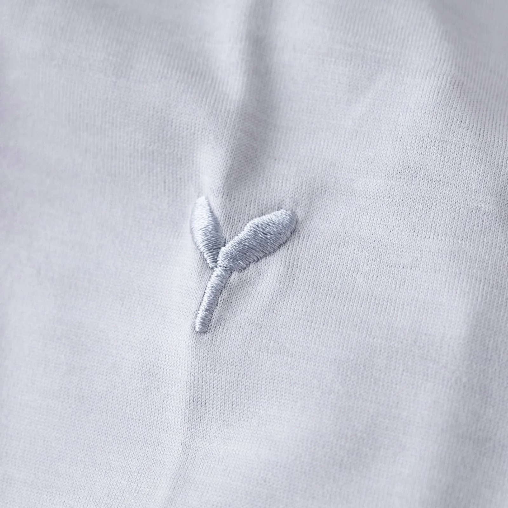

本格的な夏の暑さが近づき、紫外線対策が気になるこれからの季節。 かわり芽からは、ウール100％のタンクトップと長袖Tシャツの重ね着を提案します。
ストレッチ性に優れた光沢感のある生地は、山歩き
やアウトドアにぴったり。春先から秋の終わりまで
3シーズンにわたって活躍してくれます。


肌ざわりのよい生地にふんわりと包まれながら、ストレスフリーで夏の山歩きを楽しみたい方は、ぜひ一度試してみてはいかがでしょうか？
選べるカラーは、オフホワイト、モカ、ライトグレーの全3色。やさしいトーンだからこそ、日常のコーディネートにも取り入れやすい一着です。 自分のパーソナルカラーに合わせたり、気分の上がる一色を選んでみたり。別カラーと組み合わせたコーディネートもおすすめです。

細番手のウール糸を使用しており、肌ざわりがなめらかなのが特徴。着心地が抜群で、毎日着ていたくなるような仕上がりになっています。

タンクトップに付属するカップは、簡単に取り外しが可能。日常使いやアウトドアシーンなど、用途に応じて使い分けができます。

ブランドのアイコンである双葉の刺繍をあしらい、ほどよいアクセントに。生地になじむカラーで仕上げた刺繍がさりげないかわいらしさを添えています。